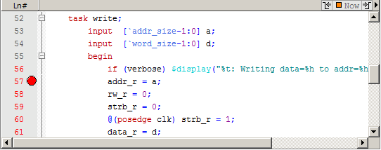

You can set individual
file-line breakpoints in the Line number column of the Source Window.
Procedure
- Click the
line number column of the Source window next to a red line number
and a red ball denoting a breakpoint will appear (Figure 1).
- The breakpoint markers (red
ball) are toggles. Click once to create the breakpoint; click again
to disable or enable the breakpoint.
Figure 1. Breakpoint in the Source Window